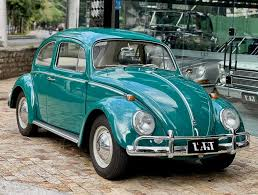

🚩
Denunciar Foto
Ajude a manter o Fusca Azul um jogo justo e divertido para todos.
Denuncie fotos que não seguem as regras.
1
Selecionar foto
2
Motivo da denúncia
3
Revisar e enviar
1. Selecione a foto que deseja denunciar

Carlos Eduardo
Praia de Icaraí, Niterói - RJ
10/05/2024 às 14:32

Mariana Costa
Centro Histórico, Paraty - RJ
10/05/2024 às 11:15
2. Motivo da denúncia
Todas as denúncias são analisadas pela nossa equipe.